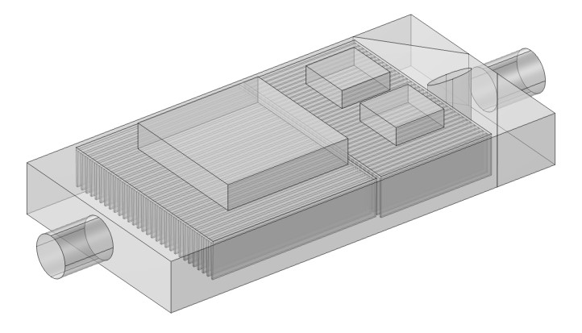
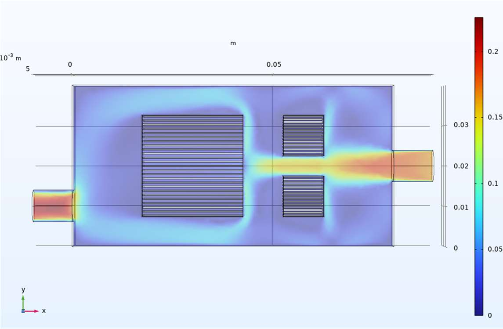
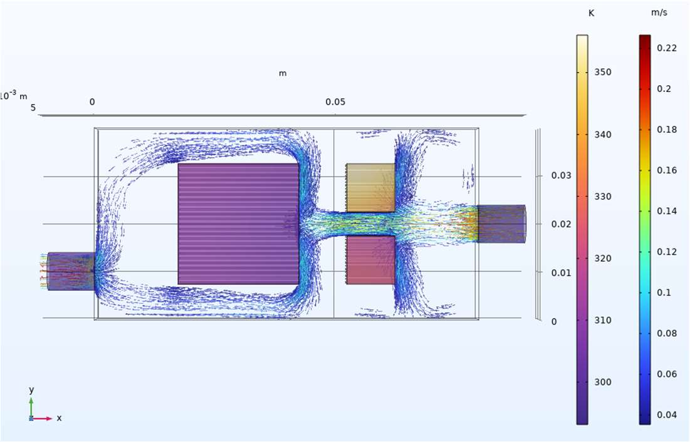
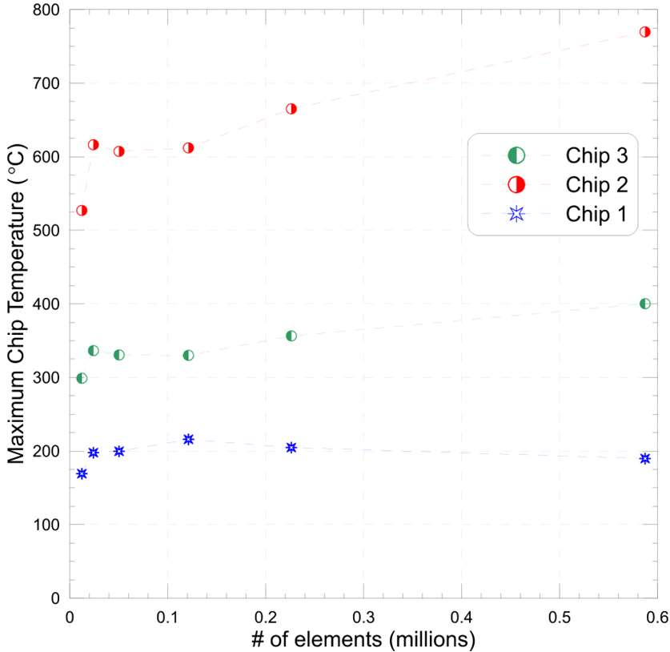
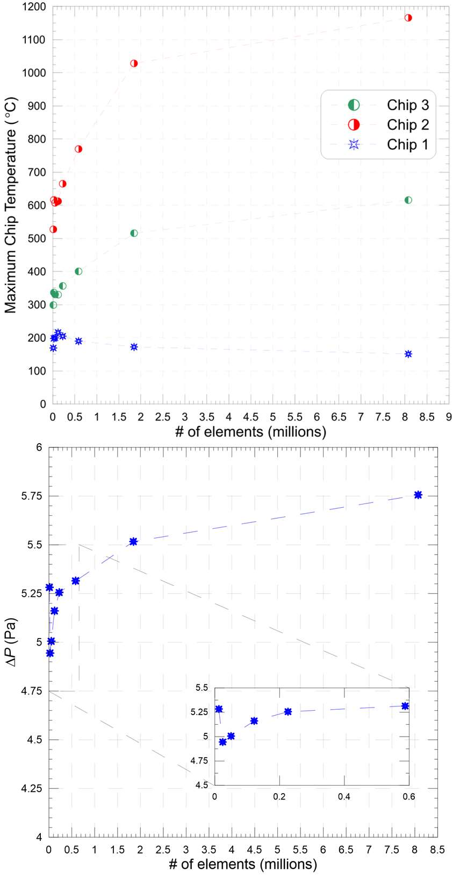
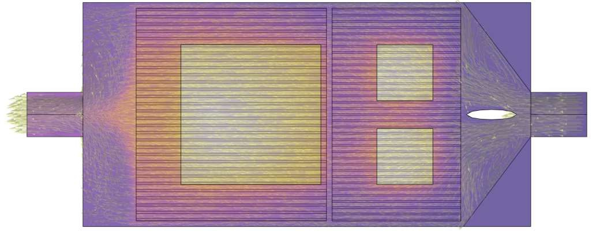

Cold Plate Design & CFD Analysis
Numerical investigation of a water-cooled plate for three electronic chips, comparing mesh sensitivity, coolant flow paths, heat-sink configurations and thermal performance.

Project restrictions & design targets
Thermal protection, geometry and coolant-flow constraints define the operating envelope.
Thermal and hydraulic constraints
Each silicon chip was required to remain at or below 85°C. Inlet flow was required to remain laminar, using Re < 2,300 as the criterion. Cooling water entered at 20°C and the pressure drop across the plate had to be restricted to avoid higher pumping demands.
The design pressure-drop limit was 65 Pa, and the final simulated pressure drop was 48 Pa.
Geometry and materials
The baseline plate envelope was 80 × 40 × 10 mm, with three silicon chips and approximately 7.95 mm-diameter inlet and outlet ports. The internal flow passages, heat-sink fins and flow-directing wedge were created and then progressively enhanced to maximize thermal performance while managing pressure drop.
The cooling system used water, copper heat-sink fins, and an aluminum flow-directing wedge. The numerical study assumed steady-state, single-phase heat transfer.
Design choices & trade-offs
Iterative geometry changes were assessed for thermal improvement and flow resistance.
Finned cooling surfaces
Straight copper fins were introduced beneath the electronic chips to increase the heat-transfer area. A shared finned heat sink was developed for the two smaller chips to take advantage of the otherwise unused space between them.
Increasing fin height and reducing spacing could improve cooling, but also increased pressure drop. The design therefore balanced available surface area against the pumping restriction.
Inlet velocity, routing and wedge
The baseline inlet velocity of approximately 0.0672 m/s was increased to 0.22 m/s in the advanced configuration to promote heat removal. Inlet and outlet positions were also adjusted to deliver cooler fluid to the smaller, higher-heat-flux chips.
A tapered internal wedge was evaluated to direct flow toward the fin arrays and limit the wake and pressure losses associated with less streamlined obstacles.
Final cold-plate geometry
Flow passages and heat-sink placement developed through design iterations.

Flow-field analysis
COMSOL velocity fields used to examine coolant distribution and recirculation patterns.


Mesh sensitivity
Comparison of simulation outputs and computational cost at several mesh resolutions.


Mesh-resolution trials showed substantial variation in predicted chip temperatures compared with a high-fidelity reference. This demonstrates the trade-off between runtime and numerical accuracy; mesh independence was not conclusively established.
Final simulation views
Top and isometric visualizations from the advanced cold-plate configuration.

Final simulation outputs
Final advanced-configuration predictions for three electronic heat sources.
These are numerical predictions, not physical test measurements. The final simulated pressure drop of 48 Pa was below the 65 Pa design limit.
Numerical assumptions & future validation
Numerical approach
COMSOL fluid-flow and heat-transfer modelling was used to study electronic-chip cooling with water. The work explored geometry changes, extended heat-transfer surfaces, flow-path modifications and mesh sensitivity.
Validation & limitations
This was a computational study, without physical fabrication or experimental testing. Assumptions included steady-state, single-phase incompressible water flow, a 20°C coolant inlet, and insulated external boundaries.